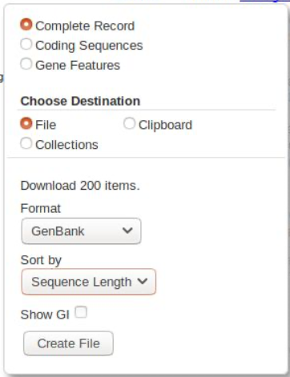

Fundamentals: Working with GenBank¶
There are many ways to get this data, the most efficient would be to use NCBI’s command line tools. However, we don’t want to run into issues with our server repeatedly accessing GenBank, so this is the easy way.
Go to the genbank nucleotide core database
In the search bar, type the following:
"Coleoptera"[Organism] AND srcdb_refseq[PROP] AND mitochondrion[filter]
We are asking for any sequences with Coleoptera in the Organism field, from the RefSeq database, and from the mitochondrion only. You should get 200 sequences. We will download all of these as a GenBank file - click on the Send to: link and select as follows:
Then click Create File and download it.
I strongly suggest you give this file a sensible name. It’s worth the keystrokes to name something accurately so you know what it is later. I would usually include that it’s from genbank, what the searchterms were, and the date, eg: “GBdl_RefSeq_ColeopMT_2019-10-04.gb”
The file we have just downloaded is a GenBank-format file. This contains sequence data, like a fasta file, but also contains annotations and features. Annotations are metadata about the sequence entry, such as the authors of the sequence, the taxonomy of the source specimen, and other information. Features are metadata about specific sections of the sequence data, such as genes. Features are often called annotations as well - indeed, generally if someone is talking about “annotating” a sequence they mean finding and marking up the gene regions in that sequence.
If the idea of gene features/annotations is new to you, you can visualise these by going back to our search results on GenBank. Choose a sequence, and below it you’ll see a Graphics link. Click this and it will load a visual representation of the Features on that record - you should be able to see how the different genes are laid out on this mitochondrion.
FYI, the search term we used for the non-Coleoptera was:
"Blattodea"[Organism] OR "Hemiptera"[Organism] OR "Lepidoptera"[Organism] OR "Diptera"[Organism] OR "Araneae"[Organism] OR "Collembola"[Organism]) AND srcdb_refseq[PROP] AND mitochondrion[filter]
Now you can look at the core section on preparing mitogenome data.